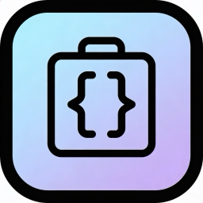

Oui. Tous les outils de transformation (JSON, Base64, Regex, Hash, JWT…) s'exécutent localement sur votre appareil. Seul le Client HTTP envoie des requêtes réseau, uniquement celles que vous lancez vous-même.
Cinq outils sont gratuits : JSON Formatter, Base64, UUID Generator, String Case Converter et Number Base Converter. Un achat unique « Pro » déverrouille tous les autres outils, sans abonnement.
Ouvrez les Réglages de l'app et appuyez sur « Restaurer les achats ». Vérifiez que vous êtes connecté avec le même identifiant Apple que lors de l'achat. L'achat est aussi partageable via Partage familial.
Les remboursements sont gérés par Apple. Rendez-vous sur reportaproblem.apple.com et sélectionnez Dev Tools Kit.
Le contenu que vous saisissez ou collez n'est jamais envoyé. L'app transmet uniquement des statistiques d'usage anonymes (voir la politique de confidentialité).
Utilisez la feuille de partage (Share Extension) pour envoyer du texte vers Dev Tools Kit, ou recherchez un outil directement via Spotlight.
Depuis les Réglages de l'app, ouvrez « Envoyer un avis », ou écrivez-nous par e-mail ci-dessous.
Vous avez une question, un bug à signaler ou une suggestion ? Écrivez-nous, nous répondons sous 48h.
✉️ contact@kcmail.frYes. All transformation tools (JSON, Base64, Regex, Hash, JWT…) run locally on your device. Only the HTTP Client makes network requests, and only the ones you trigger yourself.
Five tools are free: JSON Formatter, Base64, UUID Generator, String Case Converter and Number Base Converter. A one-time "Pro" purchase unlocks all other tools, with no subscription.
Open the app's Settings and tap "Restore Purchases". Make sure you are signed in with the same Apple ID used for the purchase. The purchase is also available through Family Sharing.
Refunds are handled by Apple. Go to reportaproblem.apple.com and select Dev Tools Kit.
What you type or paste is never sent. The app only transmits anonymous usage statistics (see the privacy policy).
Use the share sheet (Share Extension) to send text to Dev Tools Kit, or find a tool directly through Spotlight.
From the app's Settings, open "Send feedback", or email us below.
Have a question, a bug to report, or a suggestion? Write to us — we reply within 48 hours.
✉️ contact@kcmail.fr